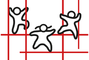

De MT is in opbouw
Deze testversie toont nog geen schermen. Ze controleert of alle bestanden dezelfde versie hebben, en of de databank bereikbaar is.
- Versie
- –
- Omgeving
- –
- Databank
- –
De MT wordt geladen. Blijft dit staan, vernieuw dan de pagina met Ctrl+F5.

GO! basisschool Klim-Op · Vilvoorde
Deze testversie toont nog geen schermen. Ze controleert of alle bestanden dezelfde versie hebben, en of de databank bereikbaar is.